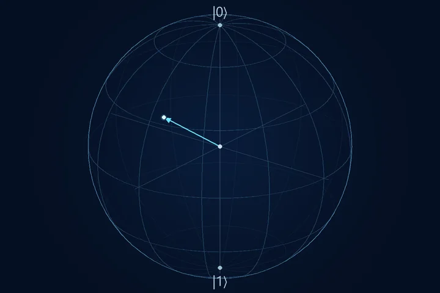
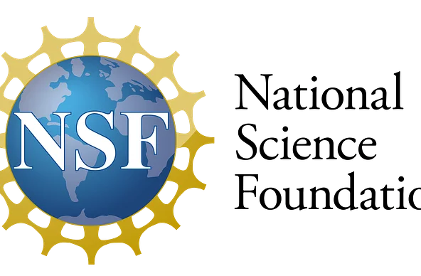
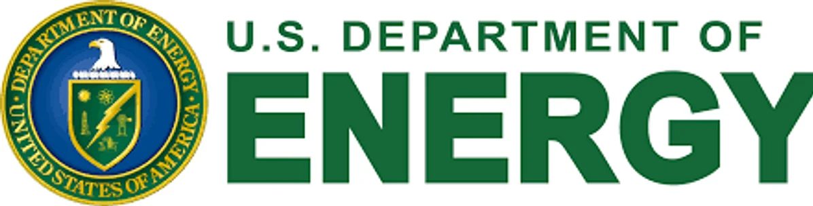
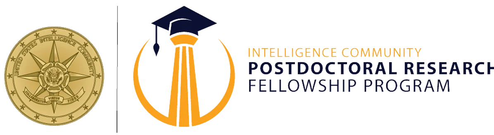
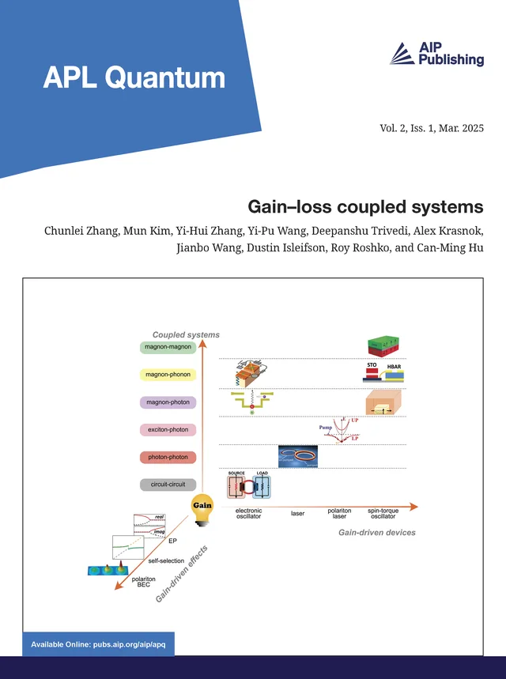
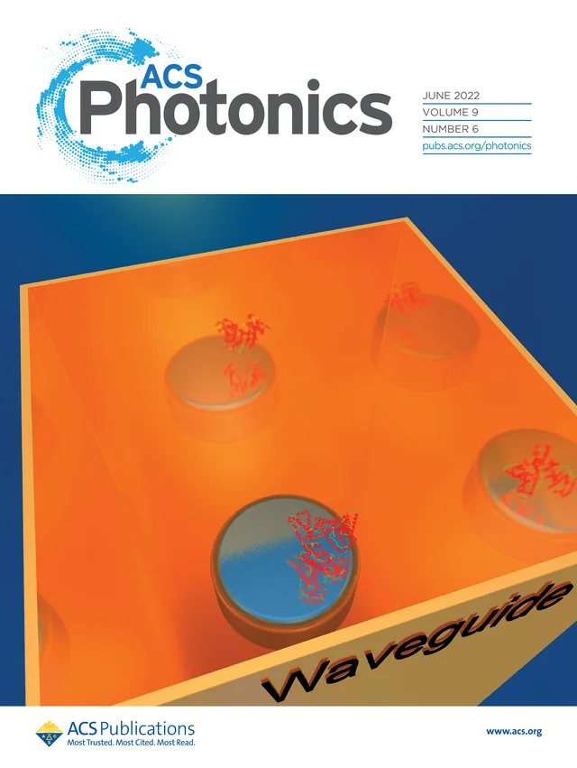
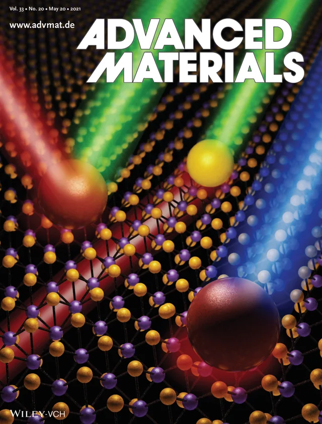
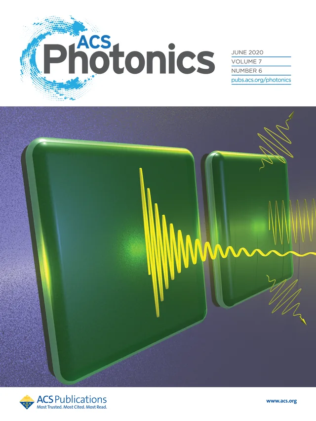
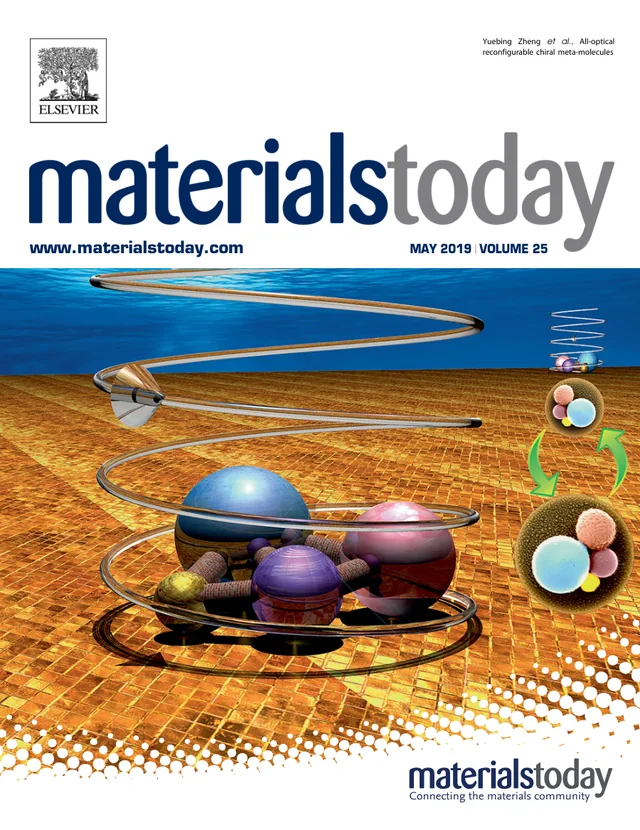

Florida International University
QTM Lab
Quantum Technologies and Metamaterials Lab
We study how shaped electromagnetic waves and engineered materials control light, sense weak signals, and address quantum devices. Our work combines theory, numerical modeling, and experiments in photonics, microwave systems, and cryogenic sensing.

200+
career-wide scholarly works
61
h-index
15,222
citations · September 25, 2026
113
i10-index
45+
journal publications since joining FIU in August 2021
2
FIU quantum-computing courses developed
Career-wide citation metrics: Google Scholar.

Led by Prof. Aleksandr Krasnok
Prof. Aleksandr Krasnok directs QTM Lab and is an Assistant Professor of Electrical and Computer Engineering at FIU. He co-founded the FIU Quantum Initiative and serves on the university-wide quantum committee. His research appears in Science, Nature, and Physical Review Letters; his 2026 recognitions include selection to the Fulbright Specialist Roster and ASEMFL Rising Star in Engineering.
Funding and Support
Active research awards include DOE/Brookhaven El-Pho, AFOSR complex-frequency plasma research, and NSF I-Corps Meta-MRI. The lab was established with a $500,000 FIU start-up package. Recent support also includes DOE SBIR/RadiaBeam, ONR, an IC postdoctoral fellowship, and NVIDIA computing resources. Awards, roles, and funding amounts.



Research Snapshot
QTM Lab connects photonics, electromagnetics, quantum technologies, cryogenic systems, metasurfaces, and applied engineering.
Complex-frequency electrodynamics and non-Hermitian scattering
Pole-zero engineering, waveform design, and resonant scattering beyond steady-state bounds.
Relevant publicationsQuantum control and quantum-hardware diagnostics
Control protocols, diagnostics, and modeling workflows for quantum devices and platforms.
Relevant publicationsCircuit/cavity QED and photonic interfaces
Superconducting, microwave, and photonic interfaces for quantum information systems.
Relevant publicationsNanophotonics, metasurfaces, and reconfigurable antennas
Mie resonators, metasurfaces, polaritonic media, antennas, and active electromagnetic structures.
Relevant publicationsQuantum sensing, cryogenic sensing, and applied metrology
Cryogenic wireless sensing, NV-diamond magnetometry, and field-control metasurfaces for measurement.
Relevant publicationsComputational electromagnetics and quantum simulation
Full-wave simulation, GPU/HPC workflows, QuTiP, Qiskit, and reproducible research pipelines.
Relevant publicationsAbout QTM Lab
Founded at FIU in 2021, QTM Lab studies complex-frequency wave control, superconducting and photonic interfaces, and sensing with resonant structures. Postdoctoral fellows, graduate researchers, and undergraduate students develop models, build experiments, and test how these ideas perform in physical devices.
Featured Publications
Selected papers highlighting complex-frequency wave physics, scattering, quantum systems, and nanophotonics.
- D. Trivedi, A. Bhowmik, L. Niaz, and A. Krasnok, “Reflection-Zero Waveforms for Selective Loading in Shared-Line Superconducting Qubit Circuits,”Advanced Quantum Technologies 9(9), e70441 (2026).doi:10.1002/qute.70441Selected for a cover feature
Designs microwave pulses from the reflection zeros of a coupled qubit circuit to load a chosen mode while reducing energy reflected into a shared control line. Circuit simulations show substantially less excitation of neighboring qubits than equal-energy Gaussian pulses.
- A. Krasnok, “What Quantum Computer to Buy?,”AVS Quantum Science 8(3), 034101 (2026).doi:10.1116/5.0337237
Provides a procurement framework that matches quantum hardware and access models to an institution’s teaching and research needs. It connects platform choice to staffing, facilities, operating costs, and upgrade plans.
- A. Krasnok and D. Seletskiy, “Complex-Frequency Chirped Pulses for Trajectory-Resolved Scattering,”ACS Photonics (2026), published online August 4, 2026.doi:10.1021/acsphotonics.6c00602
Introduces shaped chirped pulses that sample a device’s scattering response along a measured path in the complex-frequency plane. These measurements can test competing resonance models and reveal the net winding of poles and zeros inside a closed path.
- M. M. Hasan, I. Torres, and A. Krasnok, “Quantum Magnetometers for Infrastructure Inspection and Monitoring,”Measurement 290, 122735 (2026).doi:10.1016/j.measurement.2026.122735
Assesses atomic and diamond quantum magnetometers for detecting corrosion, stress, and electrical faults in infrastructure. The review connects sensor performance to stand-off distance, calibration, noise rejection, and the requirements of field inspection.
- A. Krasnok, “Constant-Amplitude 2π Phase Modulation from Topological Pole-Zero Winding,”Physical Review Letters 137(5), 053801 (2026).doi:10.1103/xt46-rfjs
Derives a pole–zero design rule for a full 2π phase rotation at a fixed scattering amplitude. It provides two routes to amplitude-stable phase control: shaped complex-frequency excitation and coordinated tuning of resonator parameters.
- A. Krasnok, “Metamaterials in Superconducting and Cryogenic Quantum Technologies,”Applied Physics Reviews 13, 021311 (2026), Special Collection: Materials for Superconducting Quantum Devices.doi:10.1063/5.0282013
Reviews how engineered electromagnetic environments can reduce unwanted qubit decay and support controlled coupling in superconducting processors. It connects metamaterial design with cryogenic materials, coherence, and scalable quantum-circuit architectures.
- S. Kim, A. Krasnok, and A. Alù, “Complex-frequency excitations in photonics and wave physics,”Science 387(6741), eado4128 (2025).doi:10.1126/science.ado4128
Brings together the theory and experiments of complex-frequency excitation across wave physics. It explains how temporal pulse shaping can emulate gain or loss and control scattering, energy capture, and wave propagation without changing a material’s composition.
- G. Hu, Q. Ou, G. Si, Y. Wu, J. Wu, Z. Dai, A. Krasnok, Y. Mazor, Q. Zhang, Q. Bao, C.-W. Qiu, and A. Alù, “Topological polaritons and photonic magic angles in twisted α-MoO3 bilayers,”Nature 582(7811), 209–213 (2020).doi:10.1038/s41586-020-2359-9
Experimentally demonstrates twist-controlled transitions in the dispersion of polaritons in α-MoO₃ bilayers. At photonic magic angles, light propagates with strongly reduced diffraction, extending twistronics to nanoscale optics.
Selected Cover Art
Selected published work recognized with journal cover features.

Front cover

Front cover

Inside front cover

Supplementary cover

Inside front cover
Recent News
Awards, support, publications, events, and lab milestones.
FIU Quantum Initiative
QTM Lab contributes to FIU-wide quantum education, research, workforce development, and partnerships.
Honors Snapshot
- ASEMFL Rising Star in Engineering, selected 2026
- Fulbright Specialist Roster, 2026–2029
- Finalist, FIU Presidential Excellence Award, 2026
- FIU Science & Fiction Lab Interdisciplinary Faculty Fellow, 2026
- FIU Top Scholar Award, 2025
- Leopold B. Felsen Award for Excellence in Electrodynamics, 2024
- IEEE Senior Member
- Stanford/Elsevier Top 2% Scientist recognition, 2021–2025
- Early-Career Award in Nanophotonics, 2021